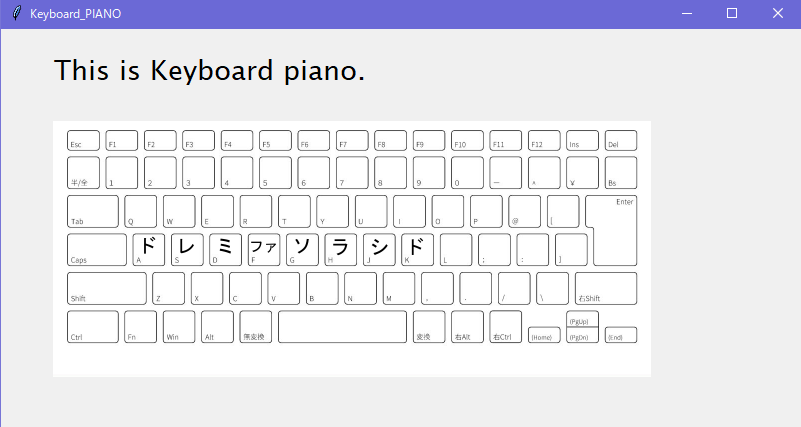

簡易ピアノ
簡易ピアノをダウンロード簡易ピアノとは？
簡易ピアノは名前の通り簡易的なピアノです。
こんな感じの画面です
何ができる？
キーボードのA,S,D,F,G,H,J,Kのキーを推すとそれぞれ、ドレミファソラシドの音が出ます。
詳細
言語 : Python3
使用ライブラリ : tkinter, pygame, time
Source Code(音源が別に必要。)
音源がある場所
import tkinter
from tkinter import *
import pygame
import time
win = tkinter.Tk()
win.title("Keyboard_PIANO")
win.geometry('800x400')
#make welcome label
label = tkinter.Label(
win,
font = ("Lucida Sans Unicode", 20),
text = "This is Keyboard piano." )
label.place(x = 50, y = 20,)
img = tkinter.PhotoImage(file = 'D:\Mori\kix.png')
canvas = tkinter.Canvas(win, height=600, width=900)
canvas.place(x=50, y=90)
canvas.create_image(300, 100, image=img)
buffer = StringVar()
buffer.set('')
def print_key(event):
key = event.keysym
if key == 'a':
doremi_in_def = r'C:XXX\DO.mp3'
if key == 's':
doremi_in_def = r'XXX\RE.mp3'
if key == 'd':
doremi_in_def = r'XXX\MI.mp3'
if key == 'f':
doremi_in_def = r'XXX\FA.mp3'
if key == 'g':
doremi_in_def = r'XXX\SO.mp3'
if key == 'h':
doremi_in_def = r'XXX\RA.mp3'
if key == 'j':
doremi_in_def = r'XXX\SHI.mp3'
if key == 'k':
doremi_in_def = r'XXX\DO(8).mp3'
pygame.mixer.init() #初期化
pygame.mixer.music.load(doremi_in_def) #読み込み
pygame.mixer.music.play(1) #再生
#知らん。
Label(win, text = '').pack()
a = Label(win, textvariable = buffer)
a.pack()
a.bind('', print_key)
a.focus_set()
win.mainloop()